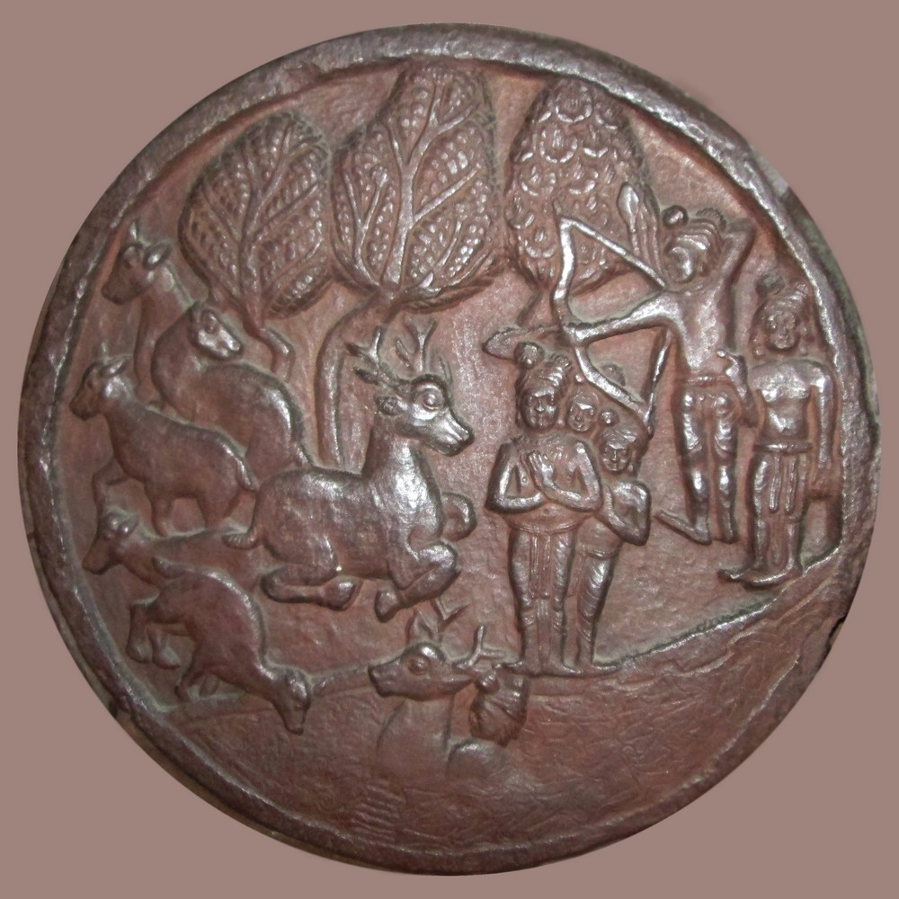

T.W. Rhys Davids
The [189] Jātaka book,{13} which we have now had before us for some years, in full, in the admirable edition of the Pāḷi text by Professor Fausboll, is now also approaching its completion in the English translation published at Cambridge under the supervision of Professor Cowell. It is so full of information on the daily habits and customs and beliefs of the people of India, and on every variety of the numerous questions that arise as to their economic and social conditions, that it is of the utmost importance to be able to determine the period to which the evidence found in this book is applicable. The problem is somewhat complicated. But if only the right distinctions be drawn, the solution of it seems to me substantially sure, and really perfectly simple.
That we should have to draw distinctions between different parts of the same book is nothing [190] surprising. As Professor Deussen has said of the early Upanishads, and as Professor Winternitz has said of the Mahābhārata, so also may be said of the Nikāyas and of the Vinaya (and even of some portions of the Abhidhamma), that “we must judge each separate piece by itself.” And this is really only the very natural and necessary result of what has been pointed out above,{14} that the books grew up gradually, that they were not books in our modern sense, and that they had no single authors.
The distinctions we have to draw will best be shown by an example. The following is an abstract of a typical Jātaka.
The Banyan-Deer Birth Story [Ja 12]
‘ “Follow rather the Banyan Deer.” This the Master told when at Jetavana about the mother of Kumārakassapa,’ and so on.
Then follows the story of this lady, how, after being wrongly found guilty of immoral conduct, she had been declared innocent through the intervention of the Buddha. Then it is said that the brethren talking this matter over at eventide, the Buddha came there, and learning the subject of their discourse said: “Not now only has the Tathāgata proved a support and protection to these two [the lady and her son]; formerly also he was the same.” Then, on request, he revealed that matter, concealed by change of birth.
“Once upon a time, when Brahmadatta was [191] reigning in Benares, the Bodhisatta was reborn as a deer, a king of the deer, by name the Banyan Deer,” and so on.
This is the Jātaka proper. It tells how there were two herd of deer shut in in the king’s park. The king or his cook went daily to hunt for deer for venison. For each one killed many were wounded or harassed by the chase. So the golden coloured Banyan Deer, king of one of the herds, went to the king of the other herd, the Branch Deer, and persuaded him to a compact that lots should be cast, and that, every day, the one deer on whom the lot fell should go voluntarily to the cook’s place of execution, and lay his head upon the block. And this was done. And so by the daily death of one the rest were saved from torture and distress.
Now one day the lot fell upon a pregnant doe in Branch Deer’s herd. She applied to the king of that herd to order that the lot, “which was not meant to fall on two at once,” should pass her by. But he harshly bade her begone to the block. Then she went to King Banyan Deer and told her piteous tale. He said he would see to it, and he went himself and laid his head on the block.
Now the king had decreed immunity to the two kings of the respective herds. When the cook saw King Banyan Deer lying there with his head on the block, he went hastily and told the king of the men. The latter mounted his chariot, and with a great retinue went to the spot, and said:
“My friend, the king of the deer, did I not grant your life? Why are you here?” Then the king of [192] the deer told him all. And the man-king was greatly touched, and said: “Rise up! I grant you your lives, both to you and to her!” Then the rejoinder came: “But though two be thus safe, what shall the rest of the herds do, O king of men?” So they also obtained security. And when the Banyan Deer had similarly procured protection for all the various sorts of living things, the king of the deer exhorted the king of men to justice and mercy, preaching the truth to him “with the grace of a Buddha.”
And the doe gave birth to a son, beautiful as buds of flowers, and he went playing with the Branch Deer’s herd. Then his mother exhorted him in a verse:
“Follow rather the Banyan, dear;
Cultivate not the Branch!
Death, with the Banyan, were better far,
Than, with the Branch, long life.”{15}
And the Banyan Deer made a compact with the men that wherever leaves were tied round a field the deer should not trespass, and he made all the deer keep to the bargain. From that time, they say, the sign of the tying of leaves was seen in the fields.{16}
This is the end of the Jātaka proper, the “Story of the Past.”
Then the Teacher identified the characters in the story as being himself and his contemporaries in a [193] former birth. “He who was then the Branch is now Devadatta, his herd the members of the Order who followed Devadatta in his schism, the doe is now Kumārakassapa’s mother, the deer she gave birth to is now her son Kumārakassapa, the king of the [194] men is now Ānanda, but Banyan, the king of the deer, was I myself.”
The Banyan Deer Jātaka Story

[Three episodes on one bas-relief.]
The bas-relief here reproduced from the Bharhut Tope illustrates, on one picture, several scenes from this Jātaka.
In this story we have first the outer framework, constituted by the introductory episode and the concluding identification. Encased in this we have the Jātaka proper, the “Story of the past,” as it is called in Pāḷi. And in this again we have what is, in the existing canonical Jātaka book, the kernel of the whole, the verse. Each of these has a separate history.
The oldest form in which we find any Jātaka is, as might be naturally expected, the simple fable or parable itself, without the outer framework at all, and without the verse. Thus in one of the Nikāyas{17} we have an exhortation to maintain a constant presence of mind, for that is “the proper sphere” of a religieux. Should he do otherwise, should he allow worldly things to agitate his mind, then will he fall – as the field quail, when he left his customary and ancestral haunts, fell into the power of the hawk. And the fable is told as an introduction to the exhortation. It has, as yet, no framework. And it contains no verse.{18} It has not yet, therefore, become a Jātaka. [195]
But one of the Jātakas is precisely this very fable, in identical words for the most part. It is decked out with a framework of introductory story and concluding identification, just as in the example just given. And two verses are added, one in the fable itself, and one in the framework. And there can be no question as to which is the older document; for the Jātaka quotes as its source, and by name and chapter, the very passage in the Saṁyutta in which the fable originally occurs.{19}
This is not an isolated case. Of the Jātakas in the present collection I have discovered also the following in older portions of the canonical books, and no doubt others can still be traced.{20}
2. Ja 1{21} Apaṇṇakajātaka is based on DN 23 Pāyāsisutta (2.342)
3. Ja 9 Makhādevajātaka is based on MN 83 Makhādevasutta (2.75)
4. Ja 10 Sukhavihārijātaka is based on Vin Cv 7 (2.182)
5. Ja 37 Tittirajātaka is based on Vin Cv 6 (2.161)
6. Ja 91 Littajātaka is based on DN 23 Pāyāsisutta (2.348)
7. Ja 95 Mahāsudassanajātaka is based on DN 17 Mahāsudassanasutta (2.169)
8. Ja 203 Khandhavattajātaka is based on Vin Cv 5 (2.109){22}
9. Ja 253 Maṇikaṇṭhajātaka is based on Vin Sd 6 (3.145)
10. Ja 405 Bakabrahmajātaka is based on MN 49 Brahmanimantanikasutta (1.328) & SN 6.8 Bakabrahmasutta (1.142)
The heroes of two of these stories, Makhādeva and Mahāsudassana, are already in these older documents identified at the end of the stories with the Buddha in a previous birth. In the Mahāsudassana, in the Litta, and in the second of the two older versions of the Baka story, the verses are given. In all the rest both identification and verses are still, as yet, wanting. [196]
The reverse case is about as frequent; that is to say, stories are told in the older documents, and the hero is expressly identified with the Buddha in a previous birth, and nevertheless these stories are not included in our Jātaka collection.{23} Such stories even before the Jātaka book grew up were called Jātakas.
There is a very ancient division found already in the Nikāyas, of Buddhist literature into nine classes.{24} One of these is “Jātakam," that is to say, Jātakas. And this must refer to such episodes in previously existing books. It cannot refer to the Jātaka book now included in the Canon, for that was not yet in existence. And it is important to notice that in no one of these instances of the earliest compositions that were called Jātakas is the Buddha identified in his previous birth with an animal. He is identified only with famous sages and teachers of olden time. This was the first idea to be attached to the word Jātaka. What we find in the canonical book is a later development of it.
Such are the oldest forms, in the Buddhist literature, of the Jātakas. And we learn fiom them two facts, both of importance. In the first place these oldest forms have, for the most part, no framework and no verse. They are fables, parables, legends, entirely (with two exceptions) in prose.
Secondly, our existing Jātaka book is only a partial [197] record. It does not contain all the Jātakas that were current, in the earliest period of their literature, among the Buddhist community.
So much is certain. But I venture to go farther and to suggest that the character of these ten earlier Jātakas, in their pre-Jātaka shape, enables us to trace their history back beyond the Buddhist literature altogether. None of them are specially Buddhist. They are modified, perhaps, more or less to suit Buddhist ethics. But even the Mahāsudassana, which is the most so, is in the main simply an ancient Indian legend of sun worship. And the rest are pre-Buddhistic Indian folklore. There is nothing peculiarly Buddhist about them. Even the ethics they inculcate are Indian. What is Buddhist about them, in this their oldest shape, is only the selection made. There was, of course, much other folklore, bound up with superstition. This is left out. And the ethic is, of course, of a very simple kind. It is milk for babes. This comes out clearly in the legend of the Great King of Glory – the Mahāsudassana. In its later Jātaka form it lays stress on the impermanence of all earthly things, on the old lesson of the vanity of the world. In its older form, as a Suttanta, it lays stress also on the Absorptions (the Jhānas), which are perhaps pre-Buddhistic, and on the Divine Abidings (the Brahmavihāras), which are certainly distinctively Buddhistic (though a similar idea occurs in the later Yoga Sutra, 1.33). These are much deeper, and more difficult, matters. [198]
So much for the earliest forms in which we find the Jātakas. The next evidence in point of date is that of the bas-reliefs on the Bharhut and Sānchi Stūpas – those invaluable records of ancient Indian archaeology of which so much use has been made in this volume. Among the carvings on the railings round these stūpas are a number of scenes, each bearing as a title in characters of the third century B.C., the name of a Jātaka; and also other scenes, without a title, but similar in character. Twenty-seven of the scenes have been recognised as illustrating passages in the existing Jātaka Book. Twenty-three are still unidentified, and some of these latter are meant, no doubt, to illustrate Jātaka stories current in the community, but not included in the canonical collection.
Now let the reader compare the bas-relief above with the Jātaka story given above. In the background three deer are being shot at, two are running away, one is looking back in fear, one has fallen. In the foreground, to the left, a deer lies with its head on the block. In the centre foreground, the king of the deer, distinguished by his antlers, crouches beside the block, and close by him is a man, presumably the cook. In the centre the king of the deer exhorts the king of the men.
It may be noticed in passing that this strange device of putting several scenes of the same story on one plate is not confined to Indian art. The Greeks did the same, and it was common in Europe at the time of the revival of the arts after the dark ages. [199]
But while the Indian artist has not hesitated to suggest in his plate so many points in the story, he omits all reference to the verse, or even to that episode in which the verse occurs. The bas-relief, however, resembles the verse in one important respect. It would be absolutely unintelligible to anyone not familar with the story as told in prose. It is the same with all these bas-reliefs. None of them, except as explained below, illustrate the verse, or the framework of the story. None are intelligible without a knowledge of the prose.
The exception referred to is the figure on the Bharhut Stupa (Plate xxvi.), unfortunately broken, but bearing in clear letters the inscription, “Yaṁ bamaṇo avayesi Jātaka.” These are the opening words of the verse in this story which, in the printed edition, is called the Aṇḍabhūtajātaka [Ja 62]. This is exactly as if the deer story above were called the “Follow rather the Banyan” Jātaka. The fact is, as I pointed out already in 1880, that very great uncertainty prevails as to the titles of these stories, the same story being very often called in the existing collection by different names. Even one of these very old bas-reliefs itself has actually inscribed over it two distinct names in full. The carving illustrates a fable about a cat and a cock; and it is labelled, in Pāḷi, both “Cat Jātaka” and “Cock Jātaka.”{25} As I then said :
“The reason for this is very plain. When a fable about a lion and a jackal was told (as in Ja 157) to show the advantage of a good character, and it was necessary to choose a short title for it, it was called the “Lion Jātaka” or the “Jackal Jātaka” or even the “Good Character Jātaka.” And when a fable was told about a turtle, to show the evil results which follow on talkativeness (as in Ja 215), the fable might as well be called the “Chatterbox Jātaka” as the “Turtle Jātaka”; and it is referred to accordingly under both those names. It must always have been difficult, if not impossible, to fix upon a short title which should at once characterise the lesson to be taught, and the personages through whose acts it was taught. And different names would thus arise, and become interchangeable.”{26}
We should not be surprised, therefore, to find in this one instance the catchwords of the verse used also as a title. And it is a most fortunate thing that in this solitary instance the words of the verse are extant in an inscription of the third century B.C.
The next evidence we have to consider is that of the Jātaka Book itself. The canonical work, containing the verses only (and therefore quite unintelligible without a commentary), is very rare even in MSS., and has not yet been edited. It would be very interesting to see what it has to say about the titles, and whether it gives any various readings in the verses.
What we have, in the well-known edition by Professor Fausböll, is the commentary. We do not know its date. But as we know of no commentaries of this sort written before the fifth century A.D. – they were all handed down till then by word of [201] mouth – it is probable that this one also is of about the same date. The author gives a slight account of himself in the opening verses, but without mentioning his name. He names three scholars who instigated him to undertake the work, and says it is based on the tradition as then handed on in the Great Monastery at Anuradhapura in Ceylon. Twice in the seven long volumes he alludes to Ceylon scholars of the second century A.D.{27} And though he only does so in notes, we may fairly conclude from all this that he probably wrote in Ceylon. Professor Childers thought he was identical with the Buddhaghosa famous as the author of other great commentaries. But for reasons given elsewhere, this is, I think, impossible.{28}
How far, then, did our unknown author vary from the tradition handed down to him? How far had that tradition, with respect at least to the historical inferences suggested by it, preserved the tone and character of that much more ancient date to which the verses themselves can be assigned? It is a difficult question, and can only be finally solved when, by a careful and detailed study of the whole of these volumes, we shall have been able to discover every case of probable age, and to weigh the general result to be derived from them all. Dr. Lüders, in two admirable articles on the Isisiṅga Legend, has shown how, in two or three instances, the prose [202] version in the commentary gives us a version of the story, later, in some respects, than that implied by the verses.{29} This is not exactly the point we are considering, but it is closely allied to it. Dr. Fick has subjected all the references contained in the Jātaka Book to the social conditions in North eastern India to a detailed and careful analysis. He has come to the conclusion that, as regards the verses and the prose part of the stories themselves, as distinct from the framework, they have been scarcely altered from the state they were in when they were handed down from mouth to mouth among the early Buddhists, and that they can be referred undoubtedly, in all that relates to those social conditions, to the time of the Buddha himself.{30} Hofrath Bühler, perhaps the very highest authority we had in Indian history, and a scholar whom no one will accuse of partiality to Buddhism, says:
“The chief point for consideration is if, in effecting the loan, the Buddhist monks altered much; and especially if the descriptions of life which the Jātakas contain have been made to agree with that of the times when Buddhism had become a power in India. The answer can only be that there are remarkably few traces of Buddhism in those stories, and that they do not describe the condition of India in the third or fourth century B.C., but an older one.” [203]
And he gives his reasons:
“The descriptions of the political, religious, and social conditions of the people clearly refer to the ancient time before the rise of the great Eastern dynasties of the Nandas and the Mauryas, when Pataliputra had become the capital of India. The Jātakas mention neither the one nor the other, and they know nothing of great empires which comprised the whole or large parts of India. The number of the kingdoms, whose rulers play a part in the Stories, is very considerable. The majority of the names, as Madra, the two Pañcālas, Kosala, Videha, Kāsi, and Vidarbha, agree with those mentioned in the Vedic literature ; while a few others, like Kāliṅga and Assaka, occur, in brahminical literature, first in the Epics and in Pāṇini’s Sūtras. The characteristic names of the Andhras, the Pāṇḍyas, and the Keralas are not mentioned.
Though a political centre was wanting, frequent statements regarding the instruction of the young brahmins and nobles show that there was an intellectual centre, and that it lay in Takkasila, the capital of distant Gandhara... And it is very credible that Gandhāra, the native country of Pāṇini, was a stronghold of brahminical learning certainly in the fourth and fifth centuries B.C., and perhaps even earlier. The statements regarding the religious condition of India point to an equally early period. Just as the Three Vedas are the basis of the higher instruction, so the prevalent religion is that of the path of works with its ceremonies and sacrifices, among which several, like the Vājapeya and the Rājasūya, are specially and repeatedly mentioned. Side by side with these appear popular festivals, celebrated, when the Nakṣatra had [204] been proclaimed, with general merrymakings and copious libations of surā, as well as the worship of demons and trees, all of which go back to the earliest times. Nor are the hermits in the woods and the wandering ascetics unknown... The state of civilisation described in the Jātakas is in various respects primitive, and particularly noteworthy is the prevalence of wood architecture, which, on the evidence of the earliest sculptures, had almost disappeared in the third century B.C. The Jātakas even describe the palaces of kings as usually constructed of wood. Many other details might be added, but the facts given are sufficient for our purpose.”{31}
Professor Fausböll himself, the editor of the Jātaka book, expresses, in the Preface to the last volume, a very similar opinion. The consensus of opinion among these distinguished scholars – the only ones who have written on this particular point – is sufficient, at least, to shift the burden of proof. Instead of neglecting altogether, for the history of India, what the Jātaka says, we may make historical inferences from statements made in the stories themselves (not in the framework) as presumptive evidence for the period in which, by a fortunate chance, the stories were preserved for us by their inclusion in the Basket of Buddhist tradition. That tradition is found to have preserved, fairly enough, in political and social matters, the earlier view. The verses, of course, are the most trustworthy, as being, in language, some centuries older. But the prose, which must have accompanied them throughout, and is [205] taken for granted in the illustrations on the ancient bas-reliefs, ought also, in such questions, to have due weight attached to it.
We may already note some points in the comparative age of the Jātakas, as compared one with another, especially at two stages in the formation of the tradition. The whole of the longer stories, some of them as long as a modern novelette, contained in Vol. VI. of the edition, are later, both in language and in their view of social conditions in India, than those in the earlier volumes. Yet several of those latest in the collection are shown by the bas-reliefs to have been already in existence in the third century B.C. And this holds good, not only of the verses, but also of the prose, for the bas-reliefs refer to the prose portions of the tales.
So also, at an earlier stage, it is possible to conclude that some of the tales, when they were first adopted into the Buddhist tradition (that is, certainly, not later than the beginning of the third century, B.C.), were already old. We have seen above that, out of those tales of which we can trace the pre-Jātaka book form, a large proportion, 60 to 70 per cent., had no verses. Now, in the present collection, there are a considerable number of tales which, as tales, have no verses. The verses (necessarily added to make the stories into Jātakas) are found only in the framework. And there are [306] other tales, where the verses do not occur in the story itself, but are put, like a chorus, into the mouth of a Devatā who has really nothing else to do with the story. It follows, I think, that these stories existed, without the verses, before they were adopted into the Buddhist scheme of Jātakas by having verses added to them; and that they are, therefore, probably, not only pre-Buddhistic, but very old.
On the other hand, as we have seen in the last chapter, the very custom, on which the Jātaka system is based, of handing down tales or legends in prose, with only the conversation in verse, is itself pre-Buddhistic. And the Jātaka Book is only another example, on a very extensive scale, of that pre-Epic form of literature of which there are so many other, shorter, specimens preserved for us in the earlier canonical texts.
To sum up:
1. The canonical Book of the Jātakas contains only the verses. It was composed in North India, in the so-called ‘Middle Country,’ before the time of Asoka. It is still unpublished.
2. It is absolutely certain that, with these verses, there must have been handed down, from the first, an oral commentary giving the stories in prose; for the verses without the stories are unintelligible.
3. Bas-reliefs of the third century B.C. have been found illustrating a number of these prose stories. One of these bas-reliefs gives also half of a verse.
4. There are Jātaka stories in those canonical books that are older than the Jātaka Book.
5. These oldest extant Jātakas are similes, parables, [207] or legends. They usually give us neither framework nor verses. In them the Buddha, in his previous birth, is never identified with an animal, or even with an ordinary man. He is identified only with some famous sage of bygone times.
6. Our present edition is not an edition of the text, but of the commentary. It was written probably in the fifth century A.D. in Ceylon by an author whose name is not known.
7. This commentary, which contains all the verses, contains also the prose stories in which they occur. To each such story it further gives a framework of introductory episode (stating when and where and on what occasion the story is supposed to have been spoken by the Buddha); and of final identification (of the characters in each story with the Buddha and his contemporaries in a previous birth).
8. This commentary is a translation into Pāḷi of the commentary as handed down in Ceylon. That earlier commentary, now lost, was in the Singhalese language throughout, except as regards the verses, which were in Pāḷi.
9. The Pāḷi commentary, as we now have it, has in the stories preserved, for the most part, the tradition handed down from the third century B.C. But in one or two instances variations have already been discovered.
10. As regards the allusions to political and social conditions, they refer, for the most part, to the state of things that existed in North India in and before the Buddha’s time.
11. When the original Jātaka was being gradually [208] formed most of the stories were taken bodily over from the existing folklore of North India.
12. Some progress has already been made in determining the relative age, at that time, of the stories. Those in the sixth and last volumes are both the longest and latest. Some of these were already selected for illustration on the bas-reliefs of the third century B.C.
13. All the Jātakas have verses attached to them. In a few instances these verses are in the framework, not in the stories themselves. Such stories, without the verses, have probably preserved the original form of the Indian folklore.
14. In a few instances, the verses, though in the stories, are in them only as a sort of chorus, and do not form part of the narrative. In these instances, also, a similar conclusion may be drawn.
15. The whole collection forms the most reliable, the most complete, and the most ancient collection of folklore now extant in any literature in the world.